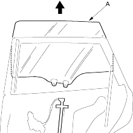
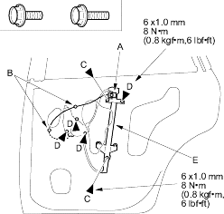
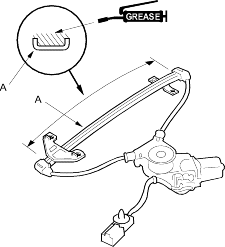

- Carefully remove the glass (A) out through the window slot. Take care not to drop the glass inside the door.

- Power window: Disconnect and detach the connector (A) and harness clips (B) from the door.
Fastener Locations C  : Bolt, 2
: Bolt, 2D : Bolt, 4

- Remove the bolts (C) and loosen the bolts (D), then remove the regulator (E) through the hole in the door. Power window is shown, manual window is similar.
- Grease all the sliding surfaces of the regulator (A) where shown.

- Install the glass and regulator in the reverse order of removal, and note these items:
- Roll the glass up and down to see if it moves freely without binding.
- Make sure that there is no clearance between the glass and glass run channel when the glass is closed.
- Adjust the position of the glass as necessary (see page 20-162).